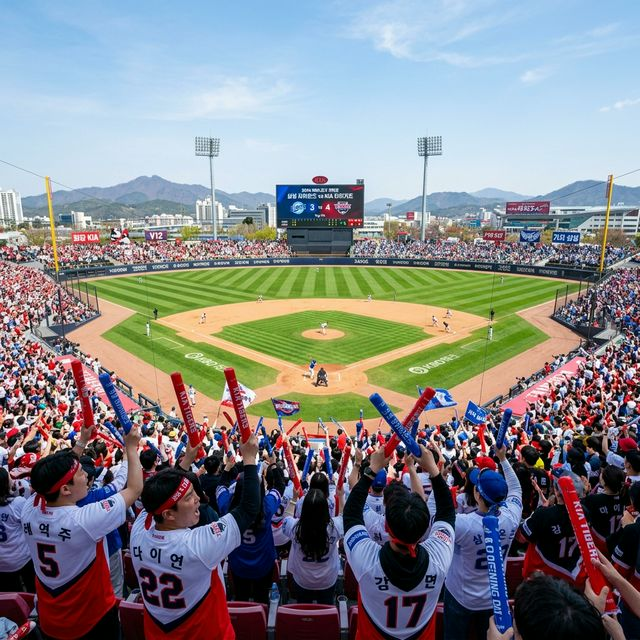
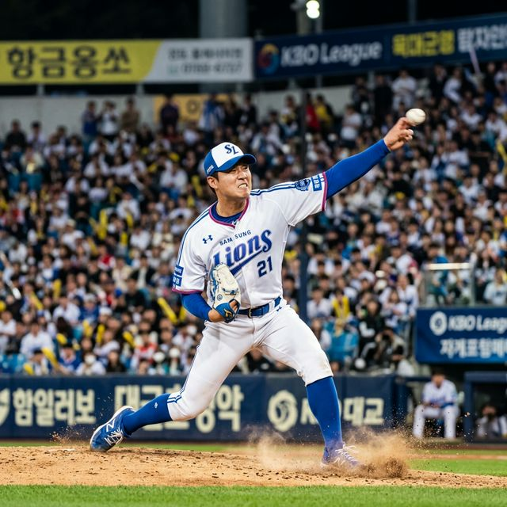

▲ 구장 곳곳에 걸린 개막 배너들. 2026 시즌은 역대 최다 관중 기록 경신을 목표로 하고 있습니다.

한국야구위원회(KBO)는 오늘 오후, 개막전에 나설 10개 구단의 최종 28인 엔트리와 선발 매치업을 공식 발표했습니다. 예상을 깬 파격적인 선택부터 정면 승부를 예고한 에이스 맞대결까지, 내일 하루 팬들의 시선은 중계 채널을 떠나기 어려울 것 같습니다.
| 장소 | 매치업 (홈 vs 원정) | 선발 투수 (홈/원정) | 비고 |
|---|---|---|---|
| 잠실 | LG 트윈스 vs KT 위즈 | 요니 치리노스 / 쿠에바스 | 디펜딩 챔피언 홈 개막 |
| 대전 | 한화 이글스 vs 키움 히어로즈 | 윌켈 에르난데스 / 후라도 | 류현진 등판 일정 조정(화요일) |
| 대구 | 삼성 라이온즈 vs 롯데 자이언츠 | 원태인(예상) / 로드리게스 | 클래식 매치업, 대구 매진 예감 |
| 인천 | SSG 랜더스 vs KIA 타이거즈 | 김광현 / 네일 | KBO 대표 에이스 vs 신규 외인 |
| 창원 | NC 다이노스 vs 두산 베어스 | 하트 / 곽빈 | 창원 NC 파크 야간 경기 개막 |
지난 시즌 통합 우승의 상징, **LG 트윈스**가 홈인 잠실구장에서 **KT 위즈**를 맞이합니다. 가장 관심을 모았던 LG의 개막 선발은 새롭게 합류한 외국인 투수 요니 치리노스로 결정되었습니다. 강력한 구속과 정교한 제구력을 갖춘 그는 LG 구단이 야심 차게 영입한 1선발 자원입니다.
이에 맞서는 KT는 '장수 외인' 쿠에바스를 내세워 진검승부를 펼칩니다. KT는 오프시즌 동안 불펜 보강에 신경을 쓴 만큼, 경기 후반 타이트한 상황에서의 운용이 승패를 가를 것으로 보입니다. LG 타선의 핵인 오지환과 홍창기가 쿠에바스의 날카로운 변화구를 어떻게 공략하느냐가 승부처입니다.

전국의 야구팬들이 가장 궁금해했던 류현진 선수의 개막전 등판은 불발되었습니다. 한화 이글스의 김경문 감독은 개막전 선발로 신규 외인 **윌켈 에르난데스**를 낙점했습니다. 이는 162경기 대장정을 고려한 전략적인 로테이션 조정이라는 평가입니다.
솔직히 팬들 입장에서는 아쉬울 수 있지만, 전문가들은 현명한 판단이라고 입을 모읍니다. 류현진은 화요일 대전 홈 시리즈 첫 경기에 등판하여 시즌 첫 승을 노릴 예정입니다. 한화는 비시즌 동안 노시환의 장타력과 젊은 투수진의 성장으로 인해 올 시즌 강력한 '다크호스'로 거론되고 있습니다. 키움 역시 후라도라는 리그 최상위권 외인 에이스를 내세워 '고춧가루 부대'의 위력을 보여줄 태세입니다.
대구 삼성 라이온즈 파크에서는 전통의 라이벌, **삼성과 롯데**가 격돌합니다. 삼성은 명가 재건을 위해 마무리 김재윤을 축으로 한 불펜 정비에 성공했다는 분석입니다. 특히 홈 팬들의 열성적인 응원을 등에 업은 구자욱과 이재현의 화력이 개막전부터 폭발할지가 관심사입니다.
롯데는 '우승 청부사' 김태형 감독 체제 아래 더욱 끈끈해진 조직력을 보여주고 있습니다. 특히 새 외인 로드리게스는 연습 경기에서 압도적인 구위로 팬들의 기대를 한 몸에 받고 있습니다. 롯데 특유의 기동력 야구가 삼성 수비진을 얼마나 흔들어놓을 수 있을지가 이번 주말 3연전의 핵심입니다.
올 시즌 유념해야 할 중요한 변화 중 하나는 더욱 고도화된 **자동 투구 판정 시스템(ABS 3.0)**입니다. 지난 시즌 도입 이후 시행착오를 거쳐 더욱 정밀해진 ABS는 일관성 있는 스트라이크 존을 제공함으로써 타자와 투수 모두에게 공정한 환경을 조성할 것으로 보입니다.
다양한 스포츠 통계 매체와 전문가들의 의견을 종합한 올 시즌 **KBO 파워 랭킹**은 다음과 같습니다. 데이터 시뮬레이션 결과에 따르면 LG, 삼성, KIA가 3강 체제를 구축할 것으로 예상됩니다.
| 순위 | 팀명 | 강점 | 예상 승률 |
|---|---|---|---|
| 1위 | LG 트윈스 | 빈틈없는 타선 & 강력한 불펜 | 0.565 |
| 2위 | 삼성 라이온즈 | 안정된 선발진 & 풍부한 유망주 | 0.548 |
| 3위 | KIA 타이거즈 | 최강의 외인 듀오 & 공격적 런닝 | 0.531 |
| 4위 | 한화 이글스 | 에이스 효과 & 보강된 타선 | 0.515 |
| 5위 | KT 위즈 | 베테랑들의 노련미 & 하위타선 강점 | 0.502 |
내일 모든 구장은 사실상 **매진(Sold-out)**이 예상됩니다. 현장에 가지 못하시는 팬분들을 위해 중계 채널 정보도 상세히 안내해 드립니다. 주관 방송사인 TV CHOSUN과 더불어 모바일 플랫폼인 쿠팡플레이와 티빙(TVING)에서 실시간 4K 생중계를 제공합니다. 또한 인공지능 해설 서비스를 통해 실시간으로 기대 득점과 투구 궤적을 분석하며 시청할 수 있는 재미도 더해졌습니다.